一口氣睡了三天分的覺，夜裡的大雨滂沱聲再怎麼驚人也抵擋不住瞌睡蟲的威力，完全陷入深深的熟睡，睡醒會搞不清楚身在何方的那種熟睡。
雨勢在早上就停歇，烏雲還有一點沒下完的感覺，小鵝打電話來說今天會下雨，心中只能期盼不要再下了，讓我安穩的騎到波茲南吧。
就算雨已經停了，還有一個東西很討人厭，風勢依然颳得咻咻叫，風向正好和我要去的地方相反，今天一整天都是在大逆風中騎車。
越想早一點到波茲南好好休息個兩天，越是快不起來，慢慢的騎完這一百五十公里的路，本來計畫是下午就可以到，結果抵達時已經快要天黑。
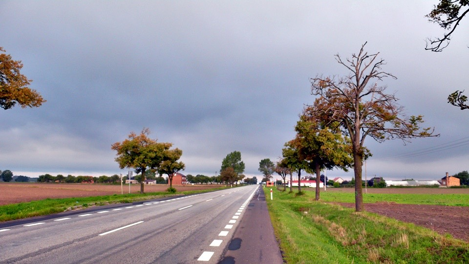
走了半個波蘭的紅色2號公路正在改建成高速公路，由波茲南為中心同時向左往柏林蓋並且向右往華沙興建，目標是將兩座首都連結在一起。
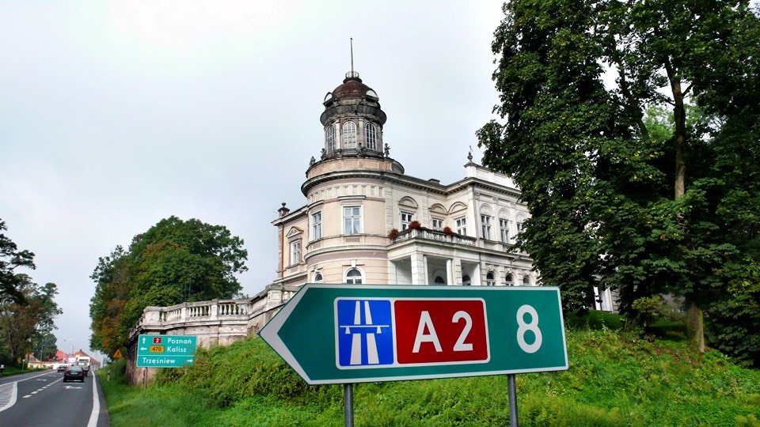
雖然還沒有蓋完，只有部分路段可以通車，可是也分攤了不少的車流量，路上的車少一點騎起來也比較安全。
其實就算車子多一點也無所謂，波蘭人開車速度很守法，哈薩克跟俄羅斯狂飆的駕駛已經看不到了，這邊馬路的限速只有俄羅斯的一半而已。
旅行一百二十多天，有些東西已經壞掉了，像是前方的行李貨架，之前在中國的時候就發現它會鬆脫，選擇用焊死的方式來處理。
經過這一路上顛簸的行程之後，連焊死的螺絲都被震掉兩顆，其中一個還能用替代的螺絲鎖回去，這一個則是連螺絲孔的紋路都磨損，想鎖也沒辦法。
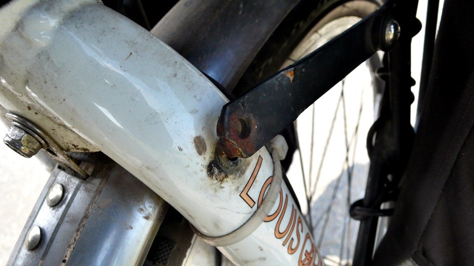
再來比貨架螺絲少一顆更令我傷腦筋的是這個，包包的固定架也快要斷掉了，五個大包包各自有自己的架子才能和貨架勾在一起，
萬一固定架斷掉的話那就完蛋了，整個包包沒地方掛，而且更慘的是如果只有一邊的固定架斷掉，那整輛車的重心就會大偏移，
所以只要有一邊的固定架斷的話，那兩邊的包包同時都沒辦法繼續掛在車上，到目前為止我還不知道有什麼好方法可以攜帶這些裝備。
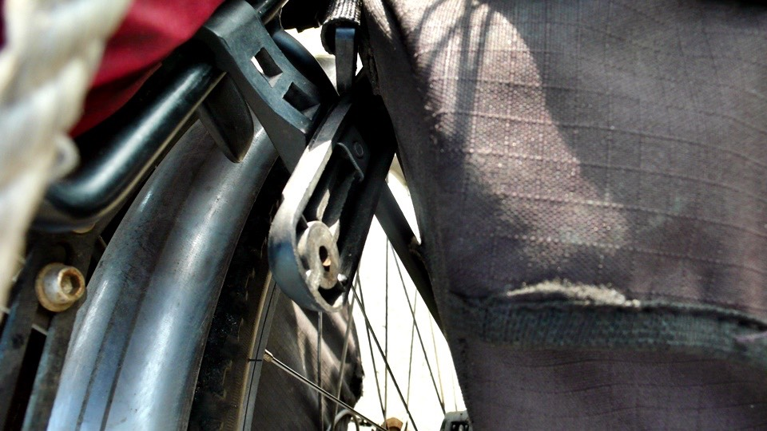
這個問題發生在行李重量比較重的後側大包包，早上發現整個固定架已經快要跟包包分離了，嚇得我趕緊想辦法減輕行李的重量。
打開包包拿出一個最好攜帶也是最重的東西，筆記型電腦，這樣子應該能夠減輕負擔，問題又變成多一台電腦我要放到什麼地方去呢？
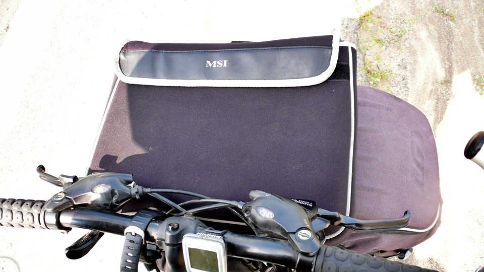
抓抓頭想了老半天，根本沒有地方可以放，就這麼放在最前面包包的上方，騎車的時候要注意別整台飛出去，不然摔爛了就沒有電腦可以寫遊記了。
紅色2號騎一騎就不見了，大概被改建成A2高速公路，接下來騎的路就變成紅色92號，一路從白俄羅斯沿伸過來的E30也在此說掰掰。
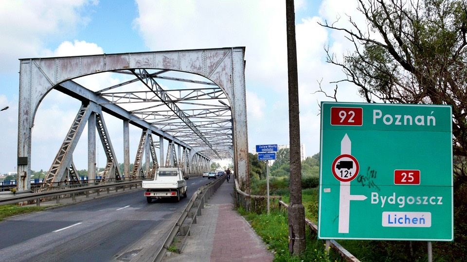
這個就是施工中的高速公路，從這邊要蓋到華沙去還有好幾百公里，目標是2010年完工。
到時候全世界飛華沙跟柏林的飛機都會減班，飛機班次都往波茲南飛，到時候波茲南會變成貿易的進出口中心，整個經濟會大起飛。
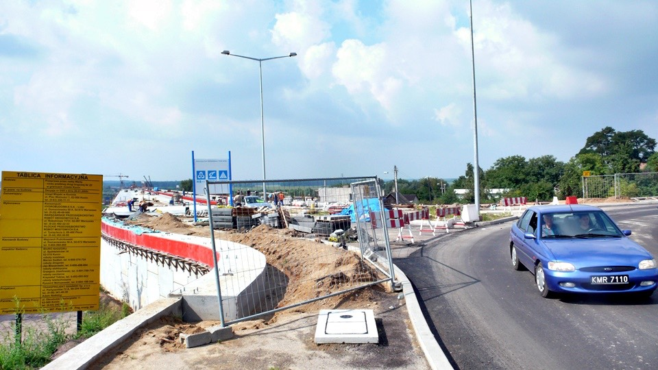
肚子餓了，補給時間到，街邊的迷你商店找看看有什麼好吃的？
裡面放著一台電風扇，波蘭在夏天的時候電風扇可是會賣到全國缺貨的，今天是晴朗的好天氣，裡面和外面一樣涼快。
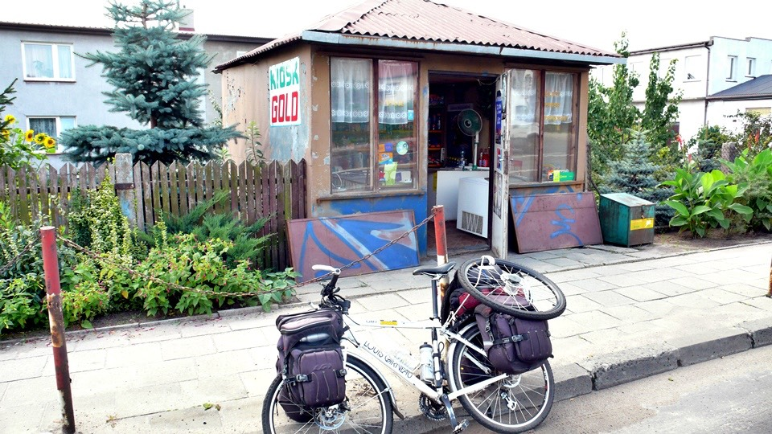
看了一下商品，最後買了跟昨天一樣的檸檬汽水，昨天買一瓶五點五元，老闆娘最後還附贈一瓶礦泉水。
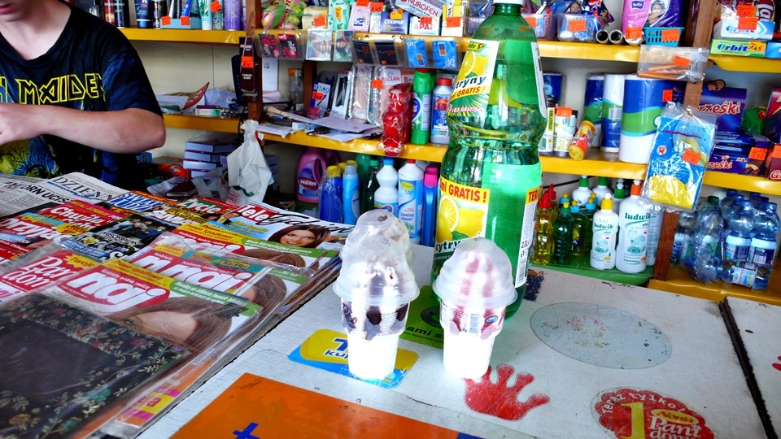
今天一樣的汽水售價只要兩點五元，當場臉上三條線-.-|||
雖然在餐廳買飲料一定會比在商店買還貴上一點是理所當然的，但是貴了一倍以上的價錢還是有點搶錢的嫌疑。
另外再買三個聖代，兩個巧克力、一個草莓口味，就蹲在店門口吃光光，加上半瓶的汽水就是午餐了。
昨天買了兩條鹹麵包也是沿路慢慢啃，一開始吃不習慣，吃久了覺得味道也挺好，這樣還能補充流汗所消耗的鹽分。
吃完冰之後在街邊的水果攤買點有營養的食物來吃，昨天看到果樹上都是蘋果就很想吃，這個光頭戴墨鏡的一點也不像賣水果的，但他就是老闆。
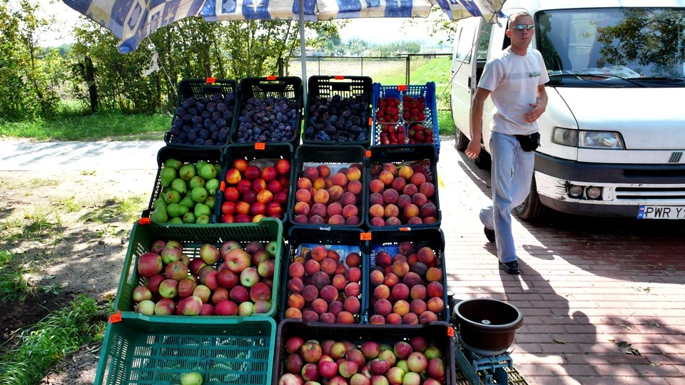
挑了兩個大蘋果，秤重的工具是傳統的天秤，將蘋果放在大缽裡，然後用砝碼來秤重，這大概是一百年前所使用的工具。
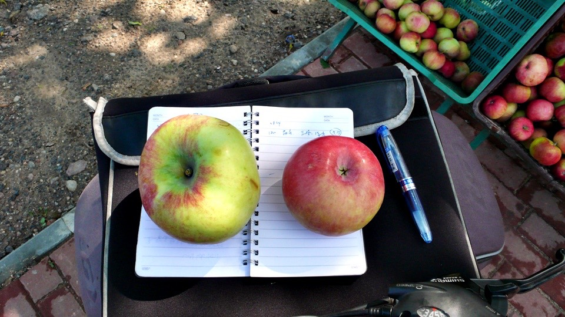
兩顆蘋果一大一小，抓了一把硬幣拿在手上請老闆自己拿，只收了少少的兩元加上一毛五的超低價。
在波蘭又變成零頭很好用的國家，希望路上還有撿到錢的機會。
啃完蘋果繼續往波茲南邁進，今天逆風騎車很慢，中午就不停下來寫遊記，等騎到波茲南再說。
騎車的時候耳朵除了音樂的聲音之外還傳來奇怪的沙沙聲，停下車關掉iPod，心裡有一種很不妙的感覺，大概是爆胎了，但是肯定沒有爆胎那麼簡單。
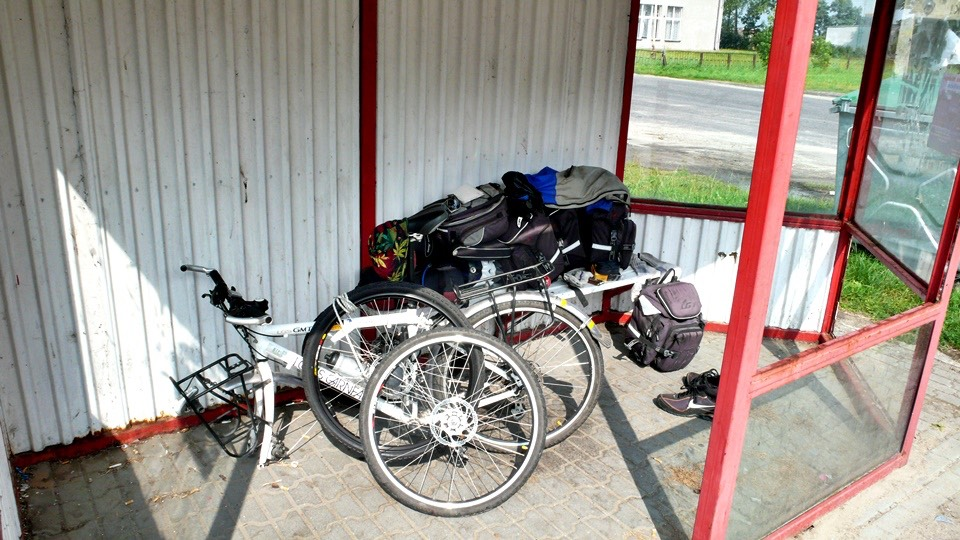
剛好前面就有公車站，可惜全透明的設計擋不了什麼太陽，這次爆胎變成前輪，也就是之前那一條狀況很不好的後輪往前換，但還是又爆了。
這次爆胎不是被什麼東西給刺穿，而是外胎終於磨到破掉，然後連內胎也跟著磨破，騎在路上就發出沙～沙～的漏氣聲。
太可惜了，這條胎還沒有磨平呢，居然就先磨穿了，這次真的是極限了，安息吧！
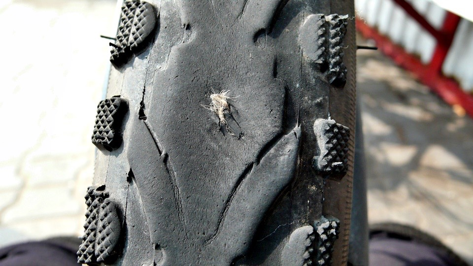
從內側往外看，這裡就是上次換胎的時候發現的極限點，果然也是從這邊掛掉，光線都可以直接穿透輪胎。
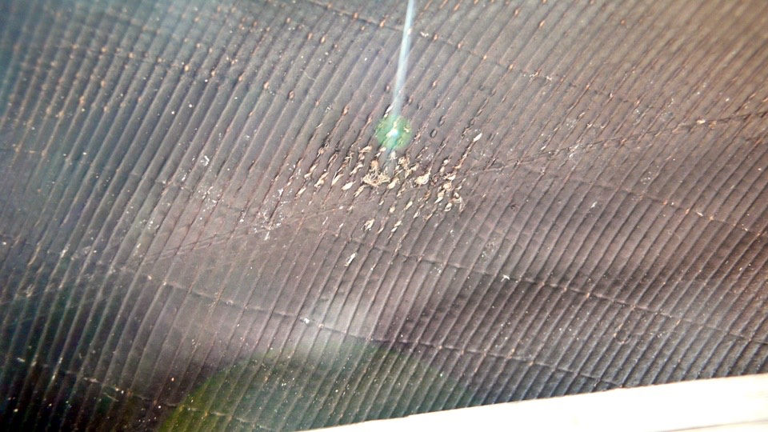
跟KENDA回報一下，這條外胎的極限測試是一萬兩千四百七十公里，如果可以生產出更耐用的輪胎的話，希望我也有機會可以測試。
這次就要換上全新的輪胎組，上面那一條是全新的外胎，真是完整又漂亮的紋路，下面這一條已經往生了。
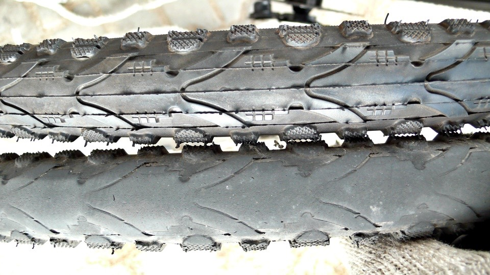
看起來像去角質前跟去角質後的美容比較圖。
既然要換就整組一起換，輪框、內胎跟外胎都用台灣寄來的這一套加強板，猛一看不知道加強在哪裡，全黑色的輪框看起來挺帶勁的，很有速度感。
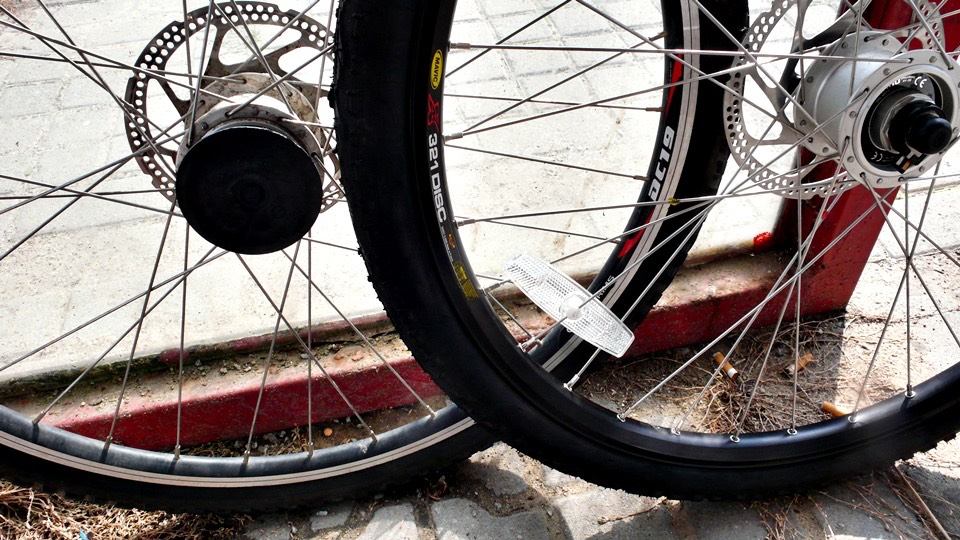
這組輪胎已經全部調配到好，內胎也已經裝在裡面，只要打滿氣就可以使用。
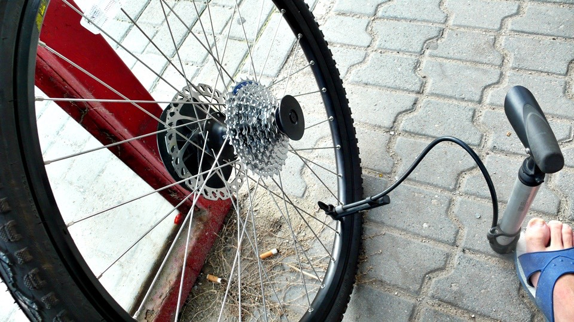
啊！被發現我穿拖鞋騎車了>"<
換胎有一個小東西要記得從舊胎拆下來，那就是單車碼表的感應器，少了這個就沒有辦法知道現在騎乘的速度和累積的里程。
剛好沒有工具拆這個小東西，用萬用把手敲了老半天，很擔心萬一搞壞掉的話就完蛋了，小心翼翼的拆下來，裝回去的時候果然就裝不牢，膠帶再度派上用場。
前後輪同時換上新胎，噹噹噹～小多的新風貌登場。
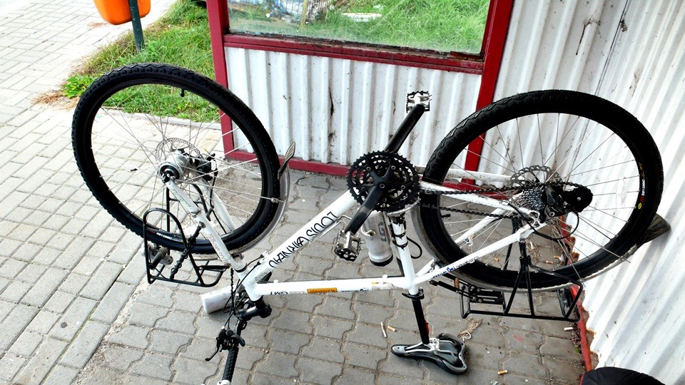
黑色比較帥對吧？
後輪的齒輪組也是全部都是新的，一塵不染乾淨的另人肅然起敬，但卻沒有看起來那麼好用。
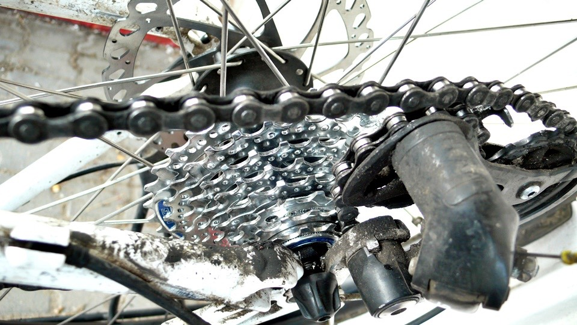
騎了一萬多公里的路，鍊條已經略微變型，配上全新的齒輪組會有咬合不順的問題，就算加上一大堆的潤滑油騎起車來還是一直發出喀哩喀哩的聲音。
新的輪框已經沒有鋼絲斷裂跟輪框歪斜的問題，騎起車來也沒有之前那種不平穩的震動感。
從哈薩克國境一路抖到波蘭，抖了好幾千公里，突然不會抖了感覺還有點不習慣。
喀哩喀哩的不單純只是聲音而已，連帶是微妙的震動感透過踏板傳到腳上，整雙腳都震得酥酥麻麻，看能不能騎上一段路之後讓齒輪組可以磨合一些。
新的輪胎換上去之後，舊的當然不能就丟在這個公車站，怎麼說也是小多的一部分，重新綑綁起來帶著繼續往巴黎移動，四輪車的造型不變。
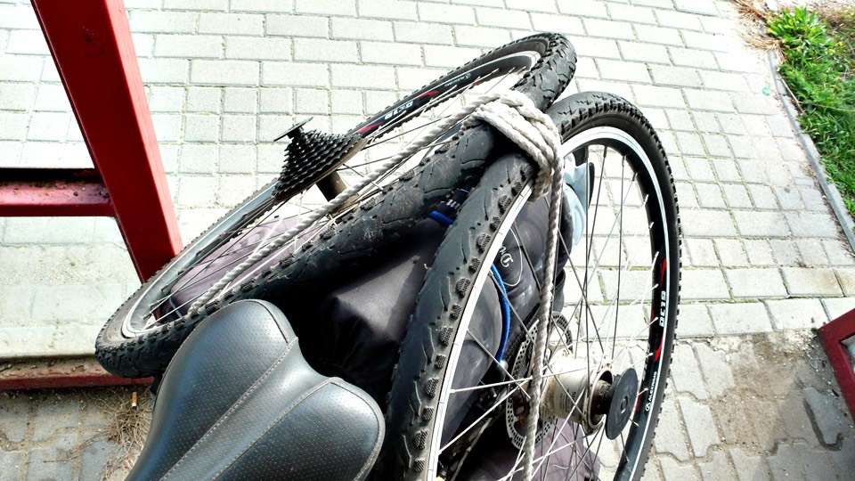
跟外胎一樣爆炸起毛的還有這一條童軍繩，尾端白花花的棉絮讓我想起遺失的鞋子，那一雙的鞋帶看起來就像這樣分岔～我的鞋子呀T_T
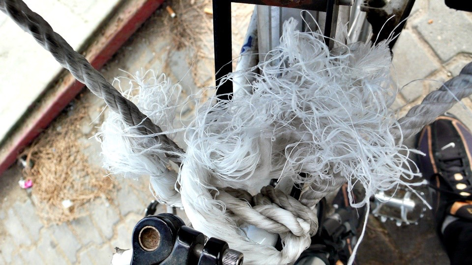
換上新的輪胎之後趕緊騎車，本來早上出發時估計抵達時間為下午四點，沿路上也幾乎沒有停下來休息，餐廳也沒光顧，遊記更是沒空寫。
逆風真的很礙事，怎麼騎都是慢吞吞，換上新的輪胎也沒有明顯加速的效果，還在適應那個喀哩喀哩的感覺。
小鵝的電話在四點的時候打來，我說大概六點左右會到，六點多的時候還距離四十公里，只好說大概八點的時候會到，抵達時間一直往後延遲。
騎到GPS記錄器都快沒電了，警示紅燈閃個不停，而我還在路上，以往的這個時候就會拿出電腦開機然後進入睡眠狀態，接上USB線邊騎車邊充電。
今天不能這樣子弄了，因為連電腦也是完全沒有電的狀態，這就是沒進餐廳寫遊記的影響，電器用品沒有充電的機會。
要是這麼繼續騎下去的話，等GPS沒電之後軌跡就會中斷在路上的某個地方，感覺很差，得找個地方緊急供應一下電力。
救命的地點是加油站的一間廁所，很幸運的裡面有插頭，就這麼在廁所充電了五分鐘，然後繼續往小鵝的方向邁進，廁所除了拉屎之外也能這麼用呀。

洗把臉，趁這短短的五分鐘去加油站的商店買瓶柳橙汁解渴，六十六元花四天應該不難，因為今天就是第四天了。
這裡已經快要進入市區，沒有看見抵達波茲南的牌子，不是沒設就是不小心看漏了。
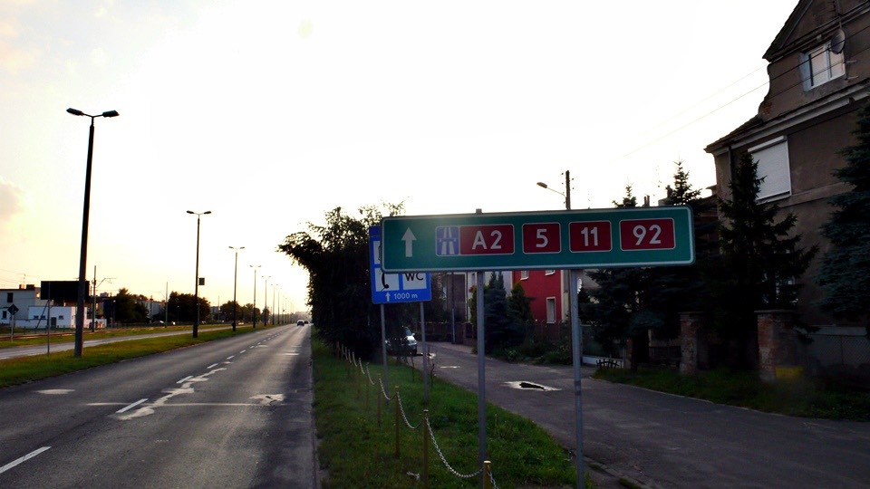
進市區的時候所有的大馬路通通匯整在一起，高速公路跟一堆A開頭的馬路全部大集合，貫通波茲南之後繼續往外散開。
不用怕進入市區會迷路，就是要想辦法進入市區才有辦法讓小鵝知道我現在的位置，跟著指往市區的箭頭一直騎，能到越熱鬧的地方越好。
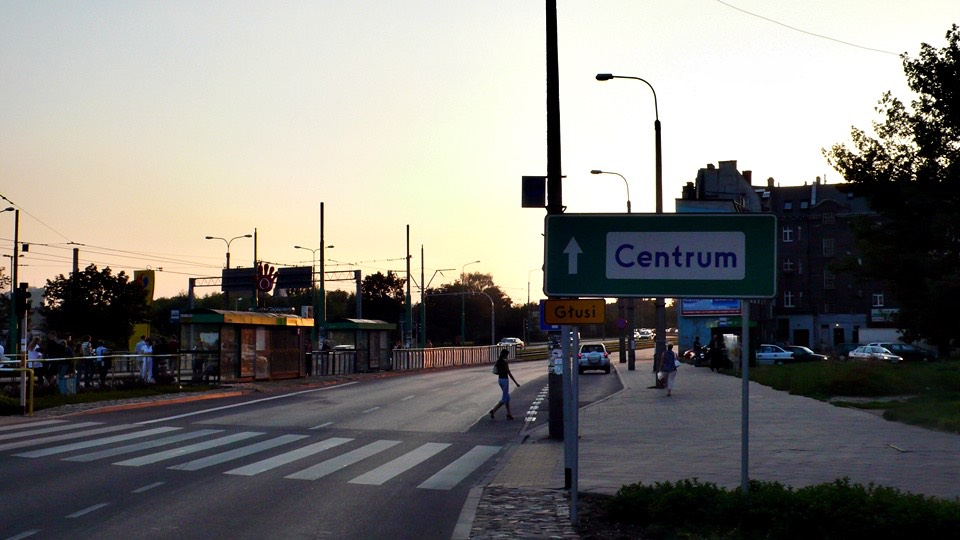
波茲南跟華沙是很不一樣的兩個城市，分別都是波蘭的大城，但是風格差異很大。
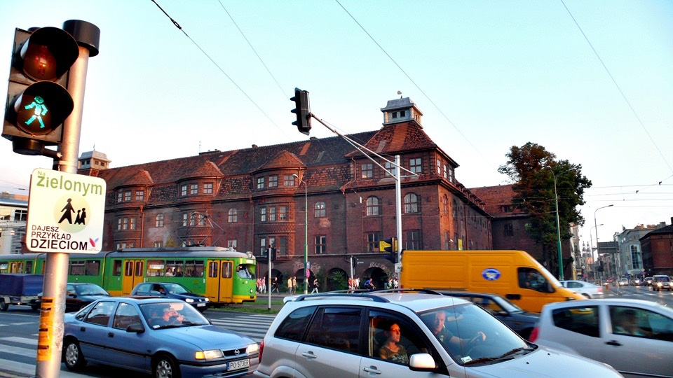
華沙在二戰的時候全部被炸光光，現在雖然很繁華但都是新蓋的建築物，波茲南則保有很多悠久年代的骨董房子，整座城市很古色古香。
抵達的時候是晚上八點半，天空還很亮，夕陽的橘光讓我能夠一覽這座城市美麗的風貌。
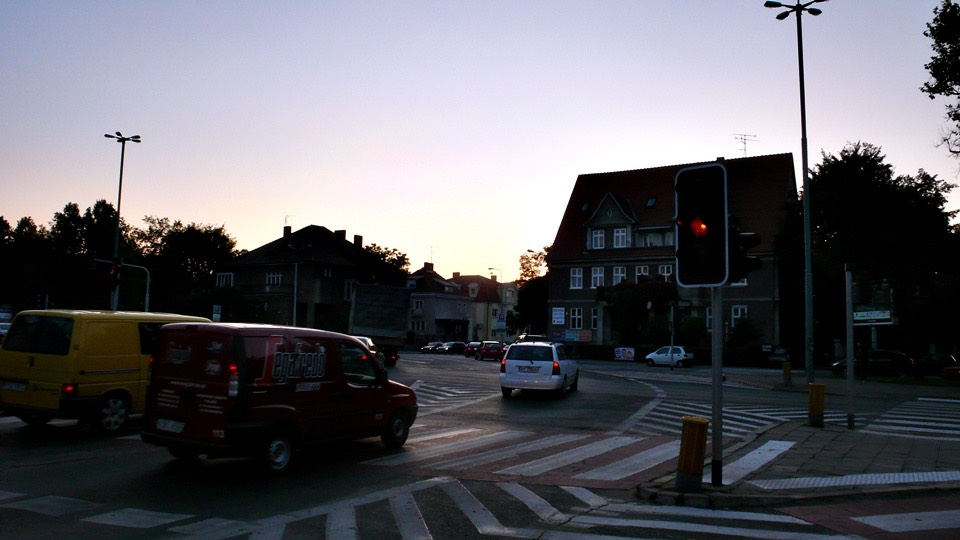
牆壁上的建築物會有很漂亮的雕刻、圖案，隨處可見而且製作都很精美，整座城市有一大堆的博物館、教堂，不僅免門票而且還二十四小時開放參觀。
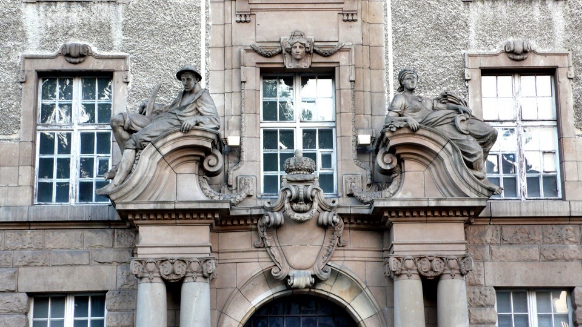
路上跑的是鐵軌電車，計費方式是用時間為基準，每十分鐘一個單位，所以要搭車的話還得精準的算出兩站之間要開多久才會到，蠻奇特的計費方式。
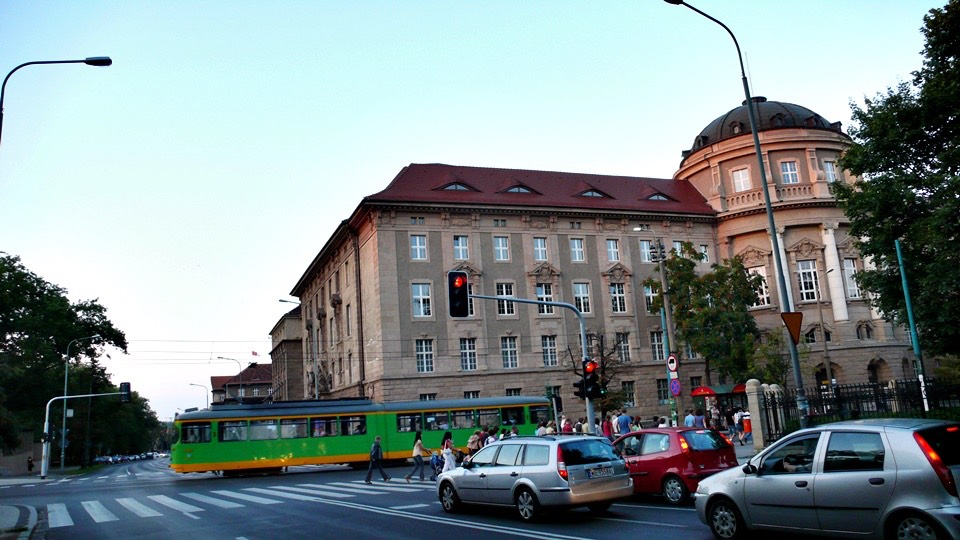
波蘭位於德國跟俄羅斯之間，以前打仗的時候，不論誰侵略誰都會經過波蘭，然後順道就把波蘭整個剷平，所以波蘭已經被滅國四次。
聽起來超悲慘的，一個國家被滅掉四次，但還是重新建立了起來，而且波蘭人以自己的國家深深為傲，以身為波蘭人為榮。
這個城市裡也有許多的公園、動物園，波茲南有非常多的地方可以去參觀，在這裡的留學生玩了一年、兩年都還沒玩夠，可以在這裡唸書也是一件很幸福的事情。
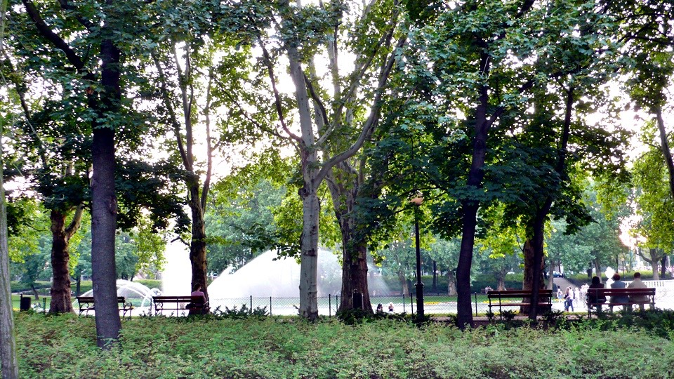
波茲南同時是大學城，裡頭分布了四所大學的各個校區，波蘭在人文、藝術和科學上都有相當好的發展，比如說蕭邦、居禮夫人等。
這是古代國王住的城堡，波蘭的鈔票上面印的人頭都是國王的臉，看起來就跟撲克牌中的老K國王臉一模一樣。
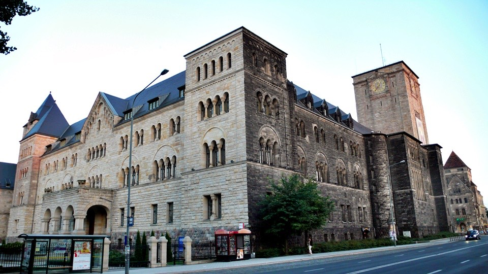
城堡的另一面，今天是星期五晚上，街道上很熱鬧，星期六商店只營業到下午兩點，星期天則只有大型的購物中心有開放，其它商家都休息，大家都去教堂做禮拜了。
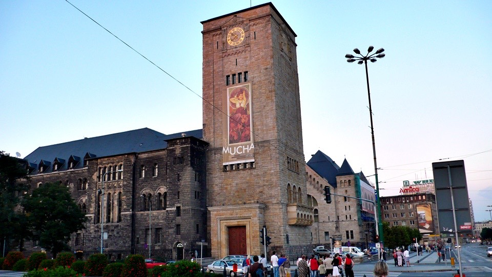
這棟城堡一年只開放一次，裡面有什麼驚人的華麗之處則不得而知。
某一個廣場看見的雙十字架雕像，這座廣場是一位詩人的紀念公園。
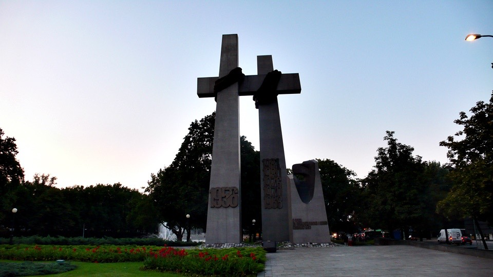
為了紀念詩人『ADAM』，可惜並不認識這位人物。
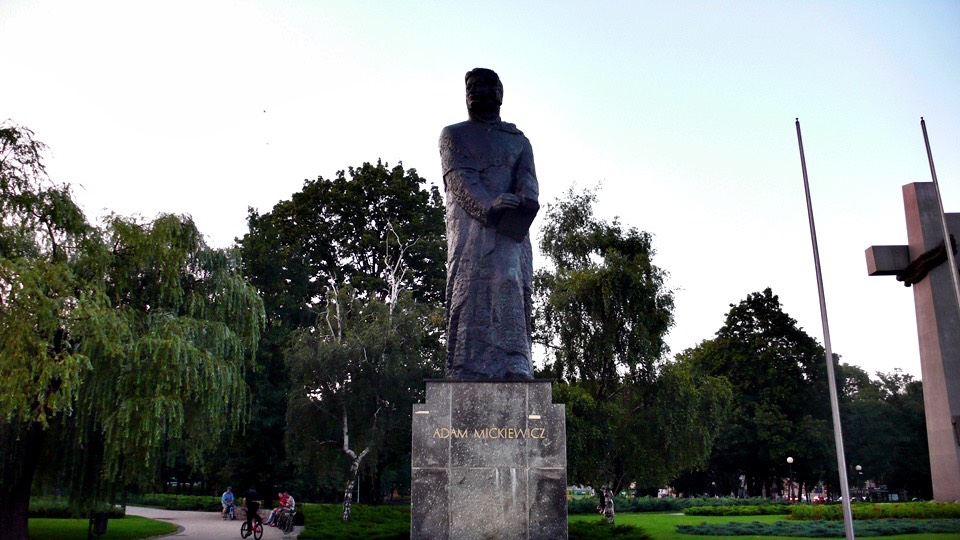
在公園的隔壁是一棟漂亮的建築，尖尖的屋頂配上城堡般的外觀，這是某一所學校的禮堂，裡面則常駐著古典樂團。
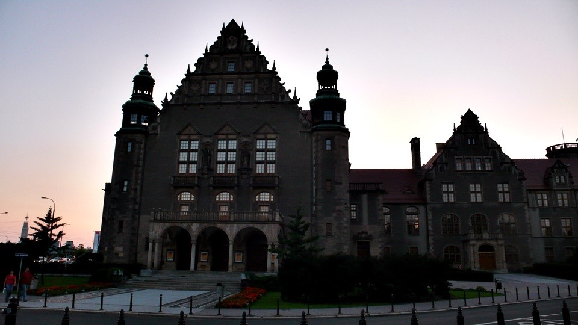
這些景色都是在等小鵝的時候沿路經過隨手拍下的，介紹文字則是小鵝之後幫忙補充。
光是這一路上隨便看就有這麼多美景，波茲南是一個能夠待上幾天好好休息的城市。
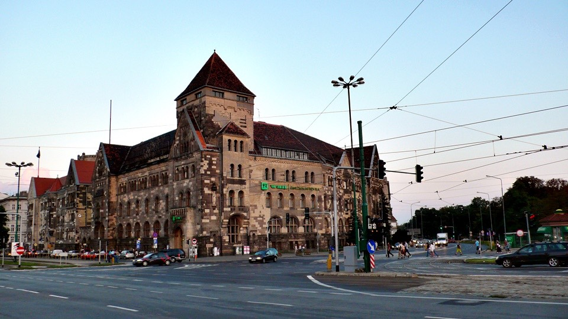
在大馬路口很容易被認出來的地方等著小鵝，三分鐘之後小鵝就開著他在波蘭買的二手飛雅特出現了。
飛雅特在波蘭是國民車，看著小小的車子真是相當可愛。
附帶一提波蘭的油價很貴，因為所有的燃料稅、空污稅，任何想得到的稅都已經包含在油價裡面，汽車也需要強制保險。
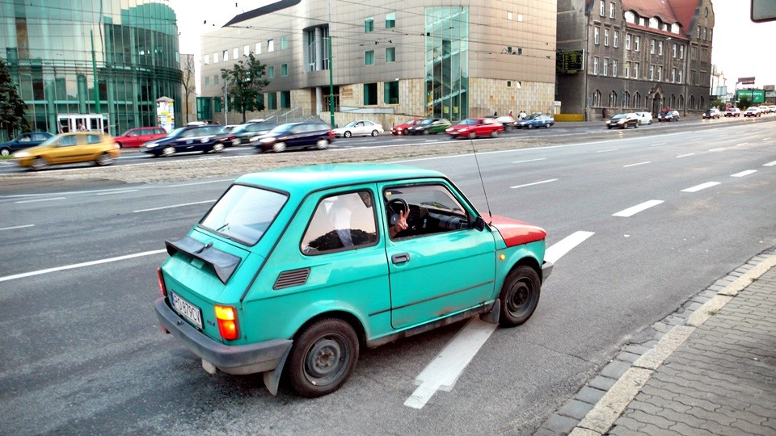
車窗裡是小鵝勝利的手勢～能夠順利的遇上他真是太令人開心了！
小鵝領著路帶著慢慢往他的宿舍騎過去，短短十分鐘的路程而已，今天不用委屈的露營了～真是太開心啦！
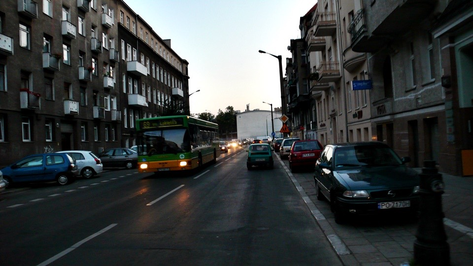
這裡是小鵝宿舍的大門，為了保護當事人所以不會有相關的照片登場^^"
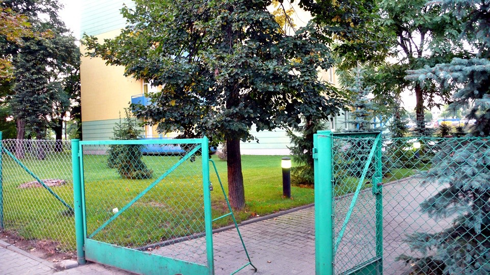
宿舍電梯很巧的在今天壞掉(殺了我吧)，一堆包包要拿上五樓，小多則鎖在一樓專門停放腳踏車的房間裡。
跟小鵝一人一半爬上五樓，這裡就是小鵝的窩啦～他在波茲南已經待三年了，整個是波茲南通，要出一本書介紹波茲南都綽綽有餘。
看著這幾年波茲南迅速發展的建設起來，加入歐盟的影響力很驚人呀，從交通運輸到經濟發展，完全都是不同規模的在進行。
抵達小鵝的宿舍 :D
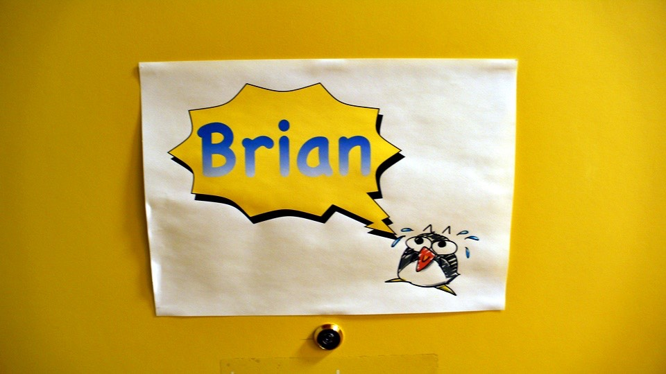
認識小鵝只是短短的幾面之緣，一開始只是因為都用蘋果電腦所以在網路上知道對方的名號。
接著我在蘋果電腦的門市打過幾個月的工，有一次他回台灣想帶一台末代的PowerPC PowerBook 17"回波茲南，正好就用職務之便用員工價幫他處理。
這已經是2005年十二月的事情了，隔了這麼久又再度見面，居然是拎著大包小包穿越半個地球到波蘭來麻煩別人，出外不靠朋友要靠誰呀。
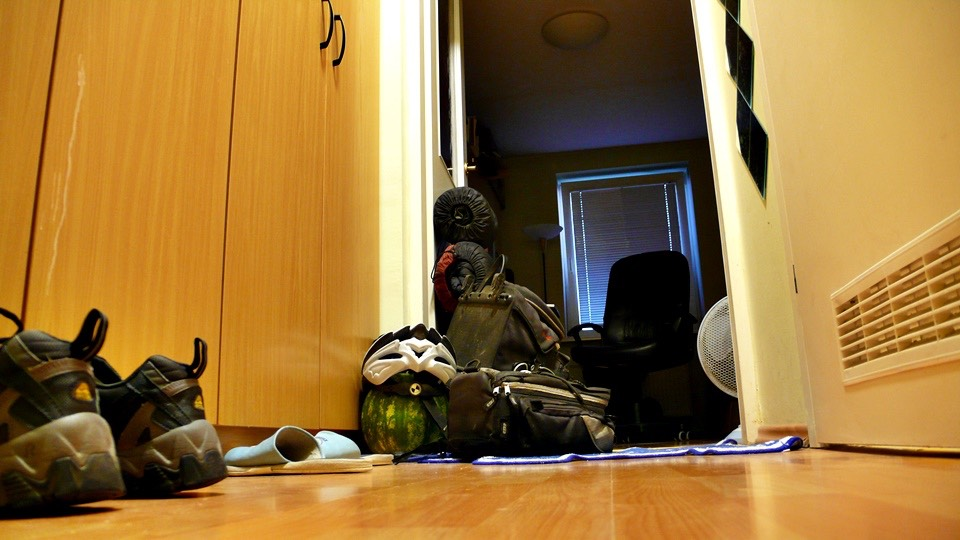
地上不知道為什麼有一顆西瓜，拿來放安全帽正好。
到宿舍的時候才發現我該怎麼跟小鵝窩在一起過這幾天呢？
睡地板或是睡走廊我都沒問題，可是很麻煩別人的生活作息，小鵝早在我從北京出發沒多久就跟這邊的台商問說有沒有宿舍可以讓我住上幾天？
真的就問到了免費的宿舍可以隨便我住都沒關係，愛住多久就住多久，不要住到簽證過期就好。
行李大多放在小鵝那邊，只帶了一個換洗衣物的包包就往宿舍移動，在這裡可以洗熱水澡也有乾淨的房間能睡上好幾天。
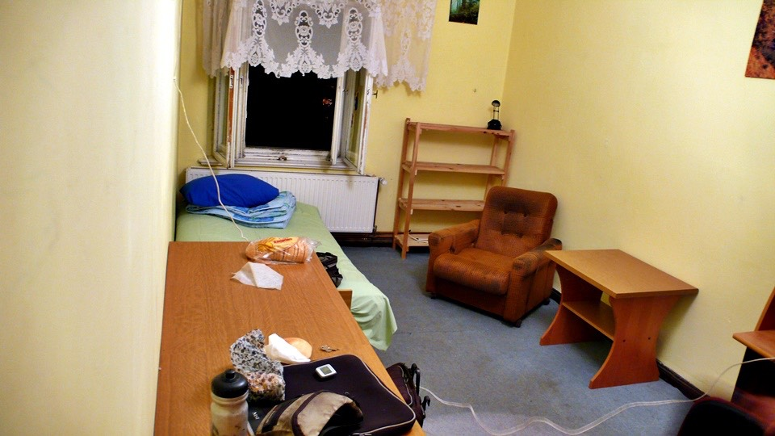
波茲南這麼漂亮，只用短短的四天就從邊界騎到這裡，再衝一點的話只需要再一天就可以騎到德國邊境去，只花五天就走過這個國家實在很可惜。
當下決定要在波茲南好好的待上幾天，反正這裡有廚房，買點泡麵什麼的也能活上一陣子。
之前我說要三個星期內騎到巴黎，不然就穿四角褲騎車的誓言，請不要放在心上，就當我熱血在信心喊話好了。
旅行這麼趕就沒意義了，目前停留在波茲南的時間沒有期限，玩夠了才走 :D
晚上小鵝開著車帶我去舊城吃飯，夜晚的城市又是另一種的風貌。
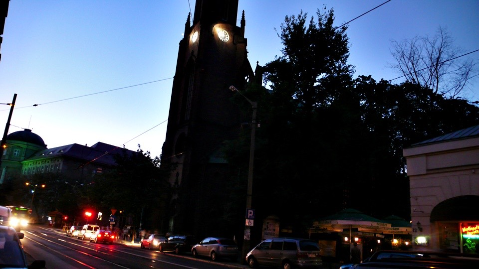
夏天的緣故，小姐們穿的都很辣，冬天就包得密不通風囉～有機會到這裡觀光一定要挑夏天來。
而且波茲南不是觀光城，觀光客不多，值得看的景點卻非常的多，很適合自助旅行來玩上一個月。
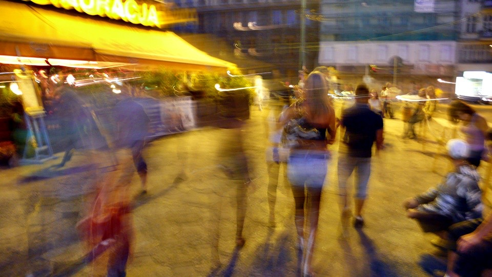
物價水準也不用擔心，雖然比起俄羅斯還稍微貴一點，可是比起隔壁的德國或是法國那已經是四倍便宜了。
一樣的汽水標價在波蘭是三元，在德國也是三元，但一邊是用茲羅提，一邊則是用歐元，價差足足四倍，在波茲南可以玩得很開心又不會變成窮光蛋。
小鵝問我要不要先洗澡？
雖然我現在很髒，但是肚子更餓，填飽我的肚子吧～便宜又好吃又吃得飽的，最好有很多的肉類，小鵝大人請推薦！
小鵝帶我來吃這間餐廳，SPHINX，這是波蘭數一數二大的連鎖餐廳，走的是美式加上波式的風味。
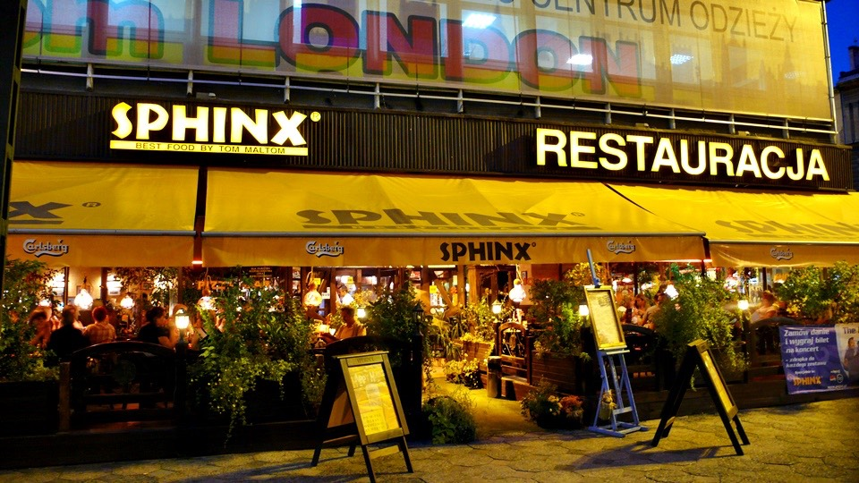
今天生意超好，整個大客滿，晚餐時間大概是九點左右，座無虛席，服務生都會講英文，但小鵝流利的波蘭語完全對答如流。
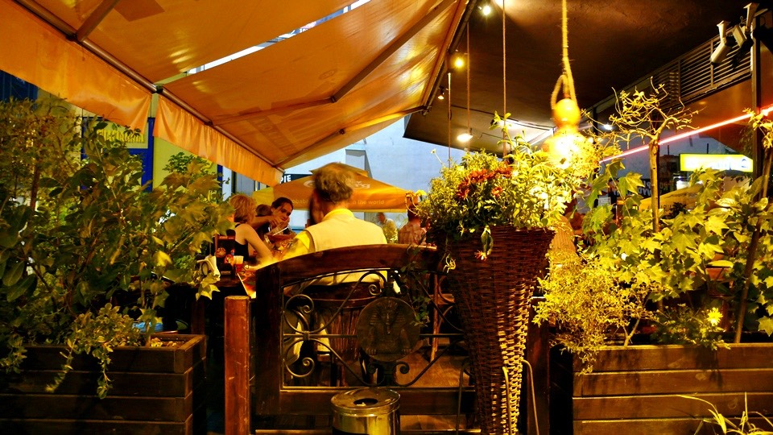
波式的風味，吃飯會有三種醬料，大蒜醬、酸甜醬跟莎莎醬，拿什麼都可以沾來吃，薯條、烤肉、麵包，沾什麼都好吃。
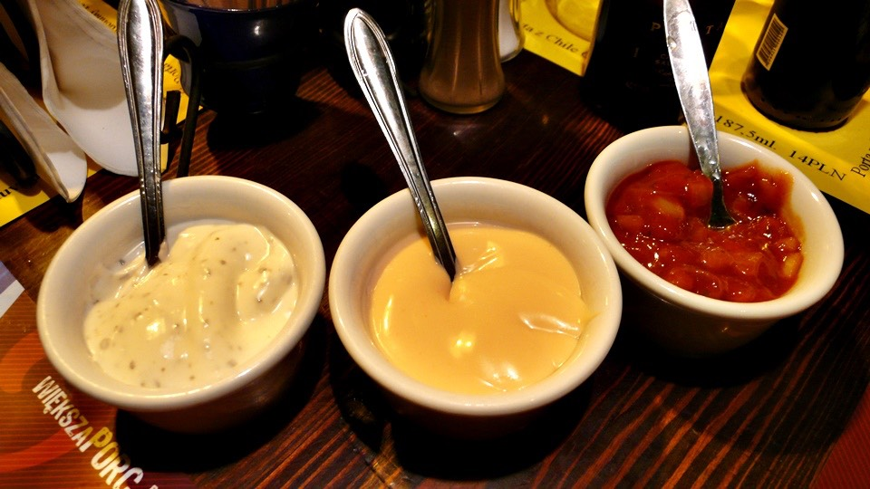
沙拉：番茄跟生菜，配上切很大塊的白色乳酪，那個很好吃～口感很清淡，這麼豪爽的吃下肚子實在太享受了！
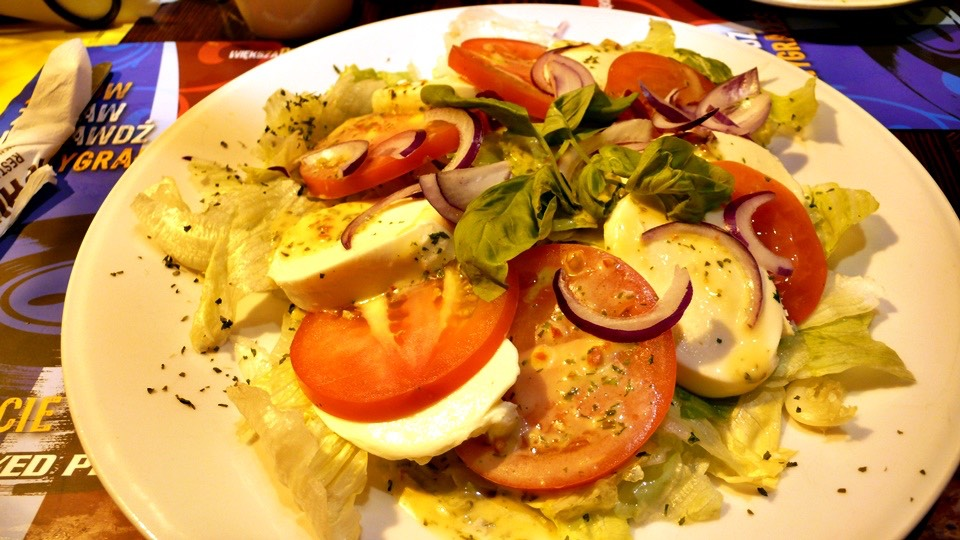
前菜：小鵝推薦的蟹肉捲，淋上好吃的磨菇醬料，麵皮裡面包覆著熱騰騰的蟹肉，超級好吃的說。
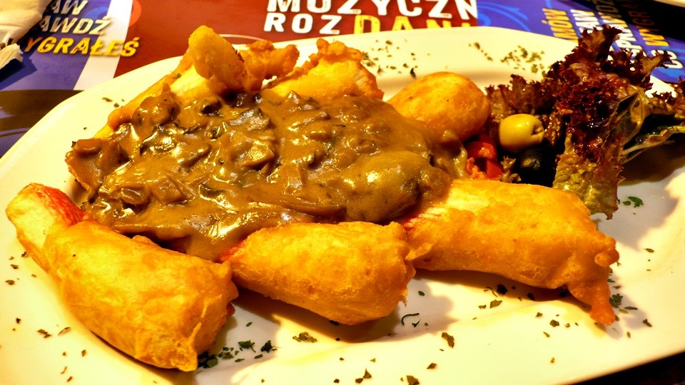
再來就是恐怖的主餐，只點了一份而已，就夠我跟小鵝兩個大男生吃到撐。
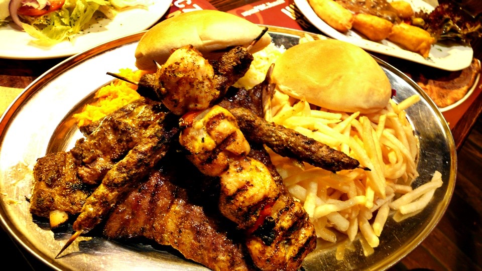
裡頭有一大份量的炸薯條、兩大塊漢堡麵包、烤雞胸肉、烤牛肉捲、烤肋排、烤豬排，別說你看了口水直流，連我現在重新看到這張照片肚子又餓了起來。
這些料理看起來很美式，波式則是隱藏在其中，這盤大餐底下鋪著三種醬菜，胡蘿蔔絲、高麗菜絲、跟紫色的甜菜絲。
這些醬菜是波蘭人每一餐甚至每一道料理必備的東西，如果在這邊點漢堡的話，裡頭就會夾一堆的甜菜絲，非常的波式風味。
吃完這頓大餐肚子飽飽的回宿舍睡大頭覺，六日兩天小鵝要開著飛雅特帶我在市區中參觀。
星期一開學之後就要靠我自己跟一張波茲南的地圖跑透透了，放長假的時候又到啦～
繼續閱讀：8.25 舊城～昔日的光彩不曾黯淡
波蘭-茲羅提－ 1：12 台幣
8.24
總計：13.8元
商店檸檬汽水、聖代三個7.15元、蘋果兩粒2.15元、橘子汁4.5元